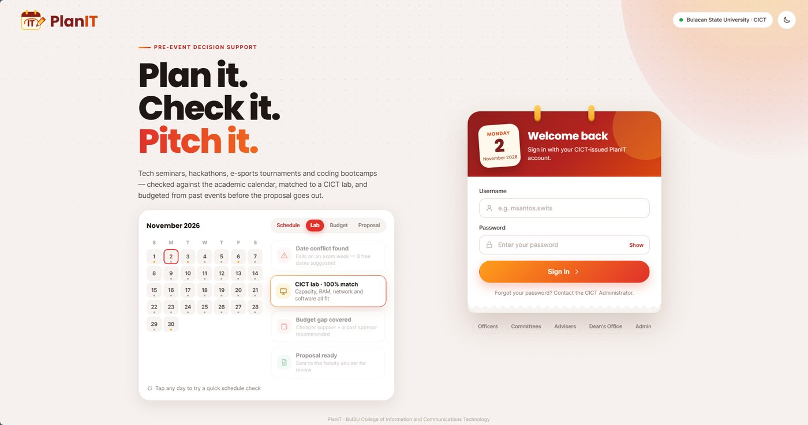

PlanIT
Developed system and research project
An event planning system for the BulSU College of Information and Communications Technology. It checks proposed events against the academic calendar, matches them to a CICT lab, and plans budgets from past events before a proposal goes to the adviser.
What I did: I built the backend, including the role-based sign-in for officers, committees, advisers, the Dean’s office and admins. I also wrote the logic that flags date conflicts with the academic calendar and suggests free dates, and set up the database tables for labs, budgets and proposals.